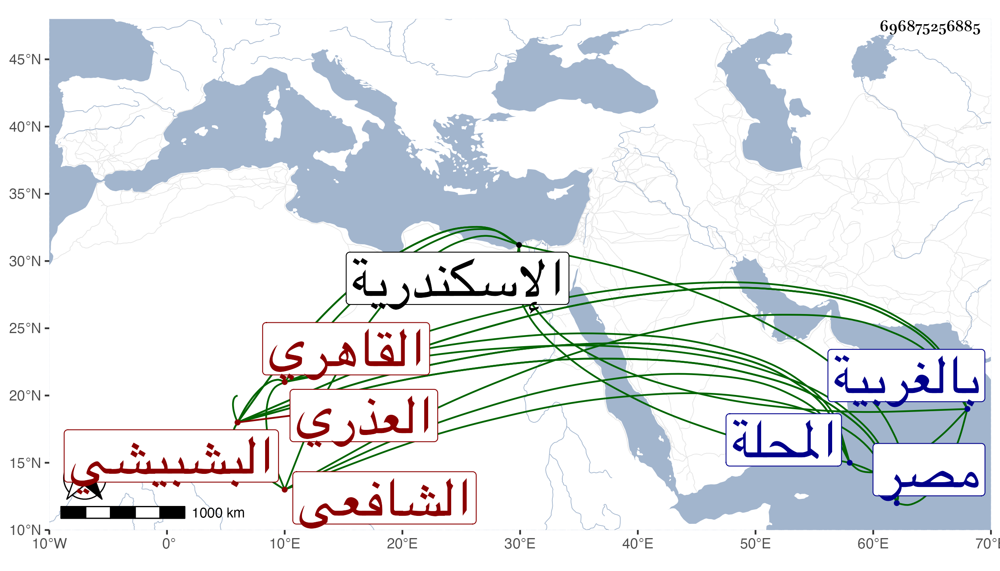

0902Sakhawi.DawLamic.ITO20230111-ara1.EIS1600.696875256885
Biography ID: 696875256885
18
عبد الله بن أحمد بن عبد العزيز بن موسى بن أبي بكر الجمال العذري البشبيشي ثم القاهري الشافعي . ولد في عاشر شعبان سنة اثنتين وستين وسبعمائة وأخذ الفقه عن ابن الملقن والعربية عن الغماري واختص به ولازمه ، وبرع في الفقه والعربية واللغة وكذا الوراقة وتكسب بها وكتب الخط الجيد ونسخ به كثيرا ، وناب في الحسبة عن التقي المقريزي وصنف كتابا في المعرب وآخر في قضاة مصر وآخر في شواهد العربية بسط فيه الكلام ، قال شيخنا سمعت من فوائده كثيرا وكان ربما جازف في نقله ، وذكره المقريزي في عقوده وحكى عنه . مات باسكندرية في ذي القعدة سنة عشرين . قلت وبشبيش قرية من أعمال المحلة بالغربية تشتبه بشيشين من تلك النواحي أيضا .
